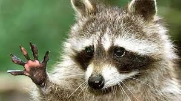
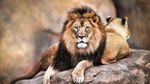
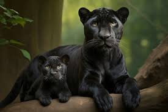
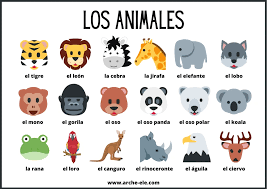

| MAPACHE | LEÓN | PANTERA NEGRA | imagen |
|---|---|---|---|
| El Mapache es un mamífero de la familia de los Procyonidae y original de América (su distribución va desde Canadá a Panamá). | Nombre científico: (Panthera leo) | La pantera negra es un felino de gran tamaño que puede llegar a medir los dos metros de largo. Este animal es muy particular |  |
| Su dieta es omnívora, los mapaches comen crustáceos, cangrejos, artrópodos, ranas, peces, nueces, semillas y bayas. Sin embargo, dado su carácter omnívoro y carroñero, la alimentación del Mapache incluye todo tipo de víveres. | Los leones suelen cazar de noche, lo que significa que sus ojos están bien adaptados a la oscuridad e incluso pueden ver en una noche sin luna, lo que es una gran ventaja a la hora de cazar. | Tiene una longitud promedio de 1,50 m de largo, y su cola mide un metro. El peso promedio de un macho es de 90 kg, mientras que las hembras pesan entre 58 a 60 kg. |  |
| Su hábitat comprende lugares con árboles, cercanos a algún depósito de agua o curso, o manglares costeros; es una especie que se ha adaptado perfectamente a zonas urbanas. | El león es un mamífero carnívoro de la familia de los félidos y una de las cinco especies del género Panthera. | La pantera negra vive en regiones selváticas en el sudeste de Asia, en la India y en el centro y sur de América. |  |
| Su peso medio es de siete a ocho kilogramos, pero ha llegado a alcanzar los 28 kilogramos. | Los leones son los únicos felinos que viven en manada. Las unidades familiares pueden incluir hasta tres machos, una docena de hembras y sus crías. | La pantera negra es conocida como el fantasma de la noche. Este animal posee una visión nocturna, la cual le permite cazar a sus presas en la oscuridad de la noche. Es un animal solitario. Prefieren vivir una vida aislada de sus demás parientes, sin embargo, solo se junta con otras panteras cuando es época de apareamiento. |  |